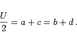
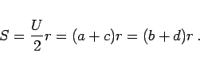

Ein Viereck, in das ein Inkreis einbeschrieben werden kann , heißt Tangentenviereck, weil die Seiten dieses Vierecks Tangenten des Inkreises sind. Diese Bedingung ist dann und nur dann erfüllt, wenn die Summe der Strecken zweier Gegenseiten gleich groß und gleich dem halben Umfang sind:
|  | (3.45) |
Die Fläche des Tangentenvierecks beträgt
|  | (3.46) |
Dabei ist r der Radius des Inkreises.